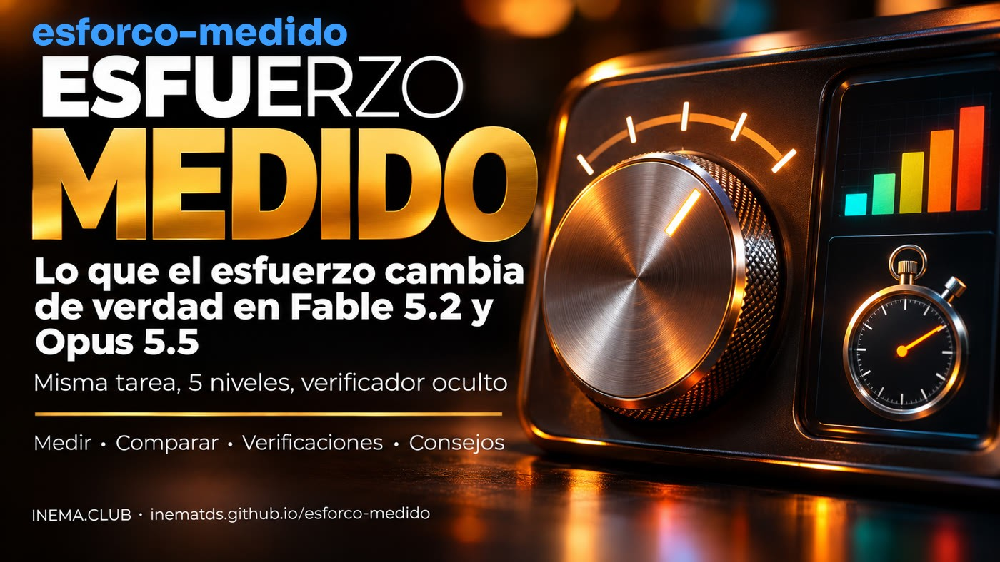

Hice 30 mediciones: en las 3 tareas, el esfuerzo mínimo acertó todo, igual que el máximo, que costó cerca de 14× más. El esfuerzo cambia cuánto piensa y verifica la IA, y el nivel “alto” de un modelo no es el mismo que el del otro.

Quien usa Claude elige un nivel de esfuerzo (de low a max) pensando que más esfuerzo significa que la IA trabaja más tiempo y acierta más. No es exactamente así. El esfuerzo cambia cuánto piensa el modelo y cuántas veces actúa y verifica su propio trabajo; el tiempo y el costo son consecuencia de eso. Este kit gratis lo muestra con cifras: ejecuta la misma tarea en cada nivel de Fable 5.2 y Opus 5.5, cuenta lo que hizo el modelo y asigna una puntuación con un verificador que no puede ver. También incluye 14 consejos con fuentes. Para leerlo, no necesitas nada; para medir, Python 3 y Claude Code.
La documentación de Anthropic dice que el nivel “cambia cómo piensa el modelo y cuántas llamadas a herramientas hace”. Una llamada a herramienta es cada vez que la IA abre un archivo, lo edita, ejecuta una prueba o hace una búsqueda. El tiempo que tarda la tarea es una consecuencia, no el botón.
En el nivel alto, el razonamiento de cada paso es más profundo. En Fable 5.2, a partir de high, hasta piensa antes de responder “hola”.
Hace más llamadas a herramientas: abre más archivos, ejecuta más pruebas y verifica lo que hizo. En el nivel bajo, agrupa pasos y verifica menos.
En los niveles bajos, el modelo tiende a terminar antes, indicando lo que falta u ofreciendo continuar. Entonces tú vuelves y le pides el resto.
Lo que el esfuerzo casi no cambia: la extensión de la respuesta. Para una respuesta corta o larga, indícalo en el pedido. Fuente: guía de migración de la API de Anthropic (Fable 5.2 y Opus 5.5), consultada el 12/11/2026.
Los cinco niveles siguen el mismo orden, pero el razonamiento detrás de cada uno cambia de un modelo a otro. Comparar “Fable high” con “Opus high” como si fueran iguales puede engañarte.
| Claude Fable 5.2 | Claude Opus 5.5 | |
|---|---|---|
| Predeterminado en la API (cuando nadie indica el nivel) | high | medium |
| Por dónde empezar, según Anthropic | high (donde se obtiene la mayor parte de la mejora) | medium y probar los niveles cercanos |
| Lo sorprendente | low quedó cerca de Fable 5.1 en niveles más altos | medium superó a high de Opus 5; low se acercó a ese nivel en código |
| xhigh y max | xhigh: un poco más de puntuación, muchos más tokens; max: el límite, poco frecuente | solo donde mediste una mejora; en xhigh/max piensa más por turno que Opus 5 |
| Trampa | “piensa menos” en el prompt no funciona a partir de medium: baja el nivel | quien copió el nivel de Opus 5 ejecuta un nivel distinto del que cree |
| Precio en la API (por millón de tokens, entrada/salida) | US$ 8 / US$ 40 | US$ 4 / US$ 20 |
En Claude Code, consulta el nivel de la sesión con /effort status y cámbialo con /effort <nível>; el nuevo nivel se aplica a partir del siguiente mensaje. Ultracode no es un nivel: es una configuración que arma un equipo de agentes con el nivel de esfuerzo que tenga la sesión.
3 tareas de código (fácil, búsqueda de errores y calendario con feriados móviles), cada una en 5 niveles en ambos modelos: 30 rondas, copia limpia, verificador oculto. Medido el 12/11/2026, una ronda por combinación.
rondas con puntuación máxima: de low a max, en ambos modelos, todas acertaron todo.
el costo de Fable 5.2 en max frente a low (US$ 9,78 × US$ 0,72), y cerca de 25× el tiempo (26 min × 1 min).
más pensamiento en Fable max que en low (132 mil × 1 mil tokens). Eso es lo que compras con el esfuerzo.
| Suma de las 3 tareas | Puntuación | Tiempo | Pensamiento (tokens) | Herramientas | Verificaciones | Costo equivalente* |
|---|---|---|---|---|---|---|
| Fable 5.2 · low | 48/48 | 1 min 05 s | 1.015 | 16 | 3 | US$ 0,72 |
| Fable 5.2 · medium | 48/48 | 1 min 26 s | 1.646 | 12 | 4 | US$ 0,83 |
| Fable 5.2 · high | 48/48 | 1 min 53 s | 3.174 | 23 | 7 | US$ 1,05 |
| Fable 5.2 · xhigh | 48/48 | 5 min 03 s | 18.580 | 33 | 10 | US$ 2,21 |
| Fable 5.2 · max | 48/48 | 26 min 42 s | 132.112 | 56 | 25 | US$ 9,78 |
| Opus 5.5 · low | 48/48 | 1 min 04 s | 253 | 11 | 5 | US$ 0,30 |
| Opus 5.5 · medium | 48/48 | 1 min 29 s | 760 | 13 | 4 | US$ 0,39 |
| Opus 5.5 · high | 48/48 | 1 min 58 s | 2.036 | 12 | 4 | US$ 0,48 |
| Opus 5.5 · xhigh | 48/48 | 3 min 35 s | 7.472 | 26 | 10 | US$ 0,79 |
| Opus 5.5 · max | 48/48 | 18 min 06 s | 92.889 | 48 | 16 | US$ 3,77 |
El pensamiento aumentó en cada nivel, en ambos modelos. Las verificaciones (ejecutar el código para comprobarlo) crecieron poco de low a high (Fable 3 → 7, Opus 5 → 4) y se dispararon en xhigh y max (Fable 25, Opus 16): ahí el modelo escribe scripts de prueba, busca casos límite y vuelve a verificar.
La puntuación. En estas tareas cortas y bien descritas, el nivel más bajo ya las resolvió. Opus 5.5 en low acertó todo con el menor costo (US$ 0,30), cerca de 32× menos que Fable 5.2 en max.
desliza la tabla hacia un lado →
* Costo que Claude Code calcula según la tabla de la API (sumado antes de redondear); con la suscripción pagas con tu límite, así que ~14× y ~32× son proporciones de costo equivalente, no de tu límite. Pensamiento = tokens de razonamiento contados en el registro de cada ronda (en RESULTADO.md, el número entre paréntesis). Lee con cuidado: son tareas cortas, una ronda cada una. No muestran en qué casos ayuda el esfuerzo alto: según Anthropic, en trabajos largos el esfuerzo bajo tiende a detenerse antes de terminar, y los problemas abiertos y difíciles se benefician de más esfuerzo. En estas rondas, ningún modelo se detuvo antes ni llamó a un subagente. Cuadros completos: exemplos/.
Repetición (ruido): Fable 5.2 en la tarea carrinho (carrito), low y high 3 veces cada uno → todas 12/12; low 26–33 s, high 39–49 s, y el high siempre pensó más. En cambio, el número de herramientas varió de 3 a 12 entre rondas iguales: compara el razonamiento y el tiempo, no un recuento aislado de herramientas.
Cada consejo incluye su fuente. La lista completa, con los detalles, está en dicas/DICAS.md (en portugués).
/effort status.--effort ultracode lo activa y lo pone en xhigh.De aquí en adelante viene la parte técnica: instalar, ejecutar el medidor y crear una tarea propia. No necesitas esta parte para entender lo anterior.
Tres piezas: el medidor, el lector de rondas y las tareas con un verificador oculto.
Ejecuta la tarea en cada combinación de modelo × esfuerzo, cada ronda en una copia limpia y con un HOME temporal: el modelo no lee tu CLAUDE.md, hooks, plugins, skills ni MCP. Usa tu suscripción (quita ANTHROPIC_API_KEY del entorno).
Lee el registro de cada ronda y cuenta herramientas por tipo, verificaciones (código ejecutado para comprobar), ediciones, relecturas, subagentes, tokens de pensamiento, tiempo, costo equivalente y si al final ofrece continuar.
3 tareas con verificador oculto: intervalos (fácil), carrinho (6 errores ocultos) y calendario (5 funciones con feriados móviles). La IA ve pocas pruebas; la puntuación se calcula con muchas.
Cada fila del cuadro final corresponde a una ronda como esta.
Sin API: todo con la suscripción.
Solo la biblioteca estándar.
python3 --versionCon acceso a Fable 5.2 y Opus 5.5 en tu suscripción.
claude --versionCada ronda consume el límite de la suscripción. Max tarda y consume más: empieza con 2 o 3 niveles.
# empieza con poco ./medir.sh carrinho -m opus -e low,medium
Comandos reales del repositorio.
Clónalo y ejecuta las pruebas (sin conexión).
git clone https://github.com/inematds/esforco-medido.git cd esforco-medido python3 -m unittest discover tests # 18 pruebas OK
Dos rondas rápidas para ver cómo funciona.
./medir.sh carrinho -m opus -e low,medium
Fable y Opus, low → max (10 rondas). Usa -r 3 para repetir cada una antes de sacar conclusiones.
./medir.sh calendario # predeterminado: -m fable,opus -e low,medium,high,xhigh,max ./medir.sh calendario -m fable -e low,high -r 3
Puntuación oculta, herramientas, verificaciones, ediciones, tiempo, tokens y costo equivalente de cada ronda. ⚠ marca una ronda en la que Claude Code usó otro modelo.
cat resultados/calendario-*/RESULTADO.md
Elige el nivel más bajo que acierta. Si el modelo se detiene antes de terminar, pega el bloque de Anthropic en CLAUDE.md.
# en Claude Code /effort medium # bloque "terminar el trabajo" printf '\n# Terminar el trabajo\n' >> CLAUDE.md && cat dicas/terminar-o-trabalho.pt.txt >> CLAUDE.md
Los mismos recuentos en una sesión ya grabada de Claude Code.
python3 relatorio.py sessao ~/.claude/projects/<projeto>/<sessao>.jsonl
tarefas/<nome>/projeto/ (el código que recibe la IA), pedido.txt (el pedido) y oculto/checar.py <pasta>, que imprime NOTA n/total.
./medir.sh minha-tarefa -e low,high
Es la medida de esa tarea, ese día. Repítela con -r 3 y usa una tarea parecida a tu trabajo.
El costo en dólares del cuadro es el que Claude Code calcula según la tabla de la API. Con la suscripción pagas con tu límite.
Sin el HOME temporal, tu CLAUDE.md y tus hooks se cargan en todas las rondas y cambian el comportamiento. --sem-isolar mide tu entorno real.
Ahí el inicio de sesión queda en Keychain: si el aislamiento no encuentra la credencial, el script avisa y se ejecuta sin aislar.
Kit hermano: esfuerzo correcto audita en qué modelo y nivel de esfuerzo se ejecuta cada parte de tu proyecto, y compara dos niveles en una tarea tuya.